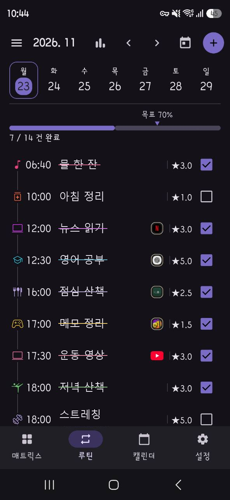
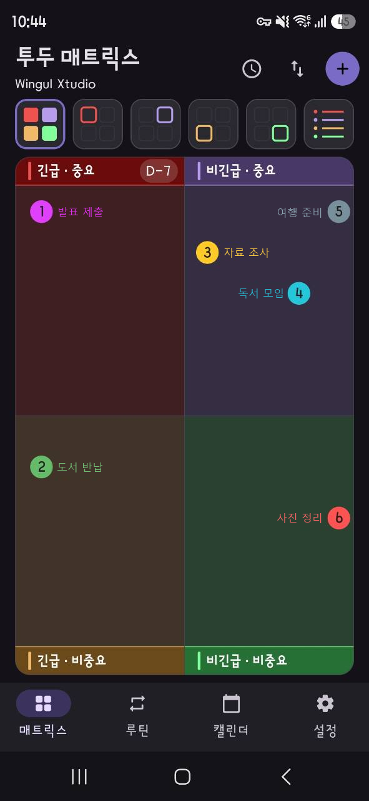
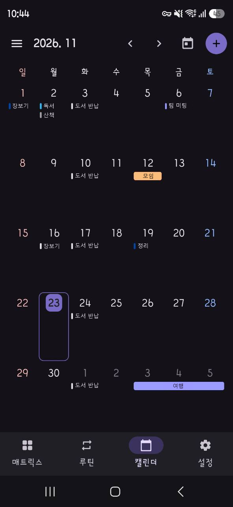

시작할 때가 된 할일에 집중
나중에 시작할 일에는 시작일을, 기한이 있는 일에는 마감일을 정해 둘 수 있습니다.
 투두 매트릭스
투두 매트릭스
마감이 다가오는 할일은 매트릭스에서, 반복하는 일은 루틴에서, 약속과 일정은 캘린더에서. 하루를 계획하고 실행하는 데 필요한 기능을 투두 매트릭스에 모았습니다.
주요 기능 보기


아침 운동에는 운동 앱을, 영어 공부에는 학습 앱을, 부모님께 전화하는 날에는 전화번호를 연결하세요. 루틴에 표시된 연결 아이콘을 누르면 앱을 열거나, 웹페이지로 이동하거나, 전화 걸기 화면을 띄울 수 있습니다.
할일에 중요도와 마감일을 정하면 매트릭스 위에 점으로 표시됩니다. 마감이 가까운 일과 중요한 일을 한눈에 비교하고, 어떤 일부터 시작할지 정해 보세요. 긴급하다고 보는 기준도 내 일정에 맞춰 설정할 수 있습니다.
중요도 ↑
마감이 가까움 →
매일 하는 일은 매일로, 정해진 요일에 하는 일은 요일 반복으로. 운동처럼 요일이 바뀌어도 괜찮은 일은 주 3회처럼 횟수로 목표를 정할 수 있습니다. 매달 돌아오는 일도 날짜나 요일에 맞춰 등록하세요.
시작 시간을 정한 루틴은 알림으로 챙기고, 해낸 날에는 완료를 기록하세요. 루틴 통계에서 어떤 날에 실천했는지, 완료한 날이 며칠인지, 달성률은 어떤지 확인할 수 있습니다.
병원 예약이나 가족 모임은 캘린더에 등록하세요. 기기 캘린더를 연결하면 휴대폰에 이미 저장된 일정도 함께 볼 수 있습니다. 보고 싶은 캘린더를 골라 오늘의 약속과 월간 일정을 확인하세요.
| 일 | 월 | 화 | 수 | 목 | 금 | 토 |
|---|---|---|---|---|---|---|
| 1 | 2 | 3 | 4 | 5 | 6 | 7 |
| 8 | 9 | 10 | 11 | 12 | 13 | 14 |
| 15 | 16 | 17 | 18 | 19 | 20 | 21 |
| 22 | 23 | 24 | 25 | 26 | 27 | 28 |
| 29 | 30 | |||||
나중에 시작할 일에는 시작일을, 기한이 있는 일에는 마감일을 정해 둘 수 있습니다.
매트릭스에 표시되는 할일마다 색과 심볼을 골라, 제목을 읽기 전에도 어떤 일인지 알아보기 쉽게 만들 수 있습니다.
Drive를 연결하면 투두 매트릭스에 저장한 데이터를 내 Google Drive를 통해 다른 기기와 동기화할 수 있습니다.
로컬 백업으로 데이터를 파일에 저장하고, 필요할 때 복원할 수 있습니다.